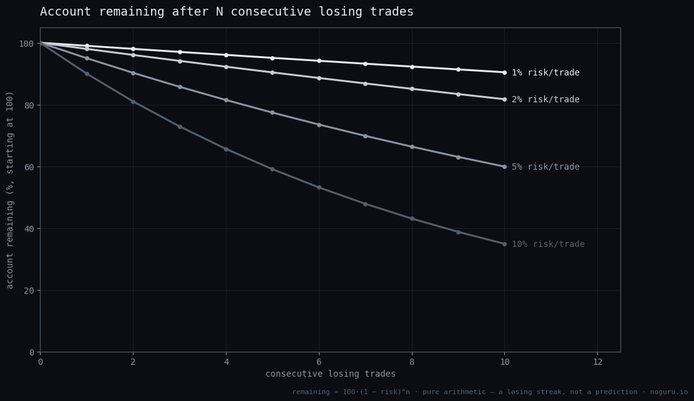

Trading Academy · Module 2 — Capital & risk management · Lesson 1/4 · Lesson 5 of 22 in the curriculum · ~7 min read
Fixed-fractional sizing: the 1-2% idea
Accounts are rarely destroyed by bad entries. They are destroyed by good-sized bets on bad entries — and by the fact that nobody decided the size at all. Fixed-fractional sizing is one rule that decides it for you: risk the same small fraction of the account on every trade.
Find something on this page
Read this lesson in context
This is the original public lesson portion. Its hypothetical examples teach general trading concepts. References to futures, stops, other strategies or older track-record formats are not statements of NoGuru’s current spot configuration.
Public reading
Two definitions first, because they are conflated constantly. Position size is how much you buy. Risk is what you lose if the trade hits its stop-loss. The fixed-fraction rule fixes the second number — say 1% of current equity — and lets the first one follow from it:
position size = (account × risk fraction) ÷ stop distance
A worked hypothetical: a $10,000 account risking 1% has $100 on the line. A coin at $50 with a stop at $46 has an 8% stop distance. Position size = $100 ÷ 8% = $1,250 — 25 coins. If the stop is hit, 25 coins × $4 = $100. Exactly 1%, by construction, on every trade, whatever the coin and however wide the stop.
Why the fraction must be small is streak arithmetic. Ten consecutive losses — a run that ordinary variance eventually deals to careful methods — does this to that same hypothetical account at three risk settings:
| Risk per trade | After 10 straight losses | Gain needed to recover |
|---|---|---|
| 1% | −9.6% | +10.6% |
| 5% | −40.1% | +67% |
| 10% | −65.1% | +187% |
Hypothetical streaks, each trade losing exactly the risked fraction; recovery bills from lesson 1.1 's formula.
Same account, same trades, same streak of bad luck — one setting shrugs it off and the others owe the vertical part of the recovery curve. Lesson 1.1 made the same point with a drawdown budget: at 1% risk, a 20% budget survives 22 consecutive losses; at 5%, it is gone inside five.
Same account, same trades, same streak of bad luck — one setting shrugs it off and the others owe the vertical part of the recovery curve.

The full lesson works the sizing formula through three risk levels on the same trade, charts the ten-loss streak, explains why this curriculum's arithmetic keeps pointing back to the 1–2% range rather than 0.1% or 5%, shows why leverage is an implementation detail of a size you already chose — not a way to choose it — and ends with an exercise: sizing one hypothetical trade three ways.
← Survive first: compounding needs a survivor Portfolio heat: your real position is the sum →
Original source risk note
Trading cryptocurrencies involves substantial risk of loss and is not suitable for every investor. The academy teaches method and arithmetic — it does not and cannot promise trading results. Nothing here is investment advice.